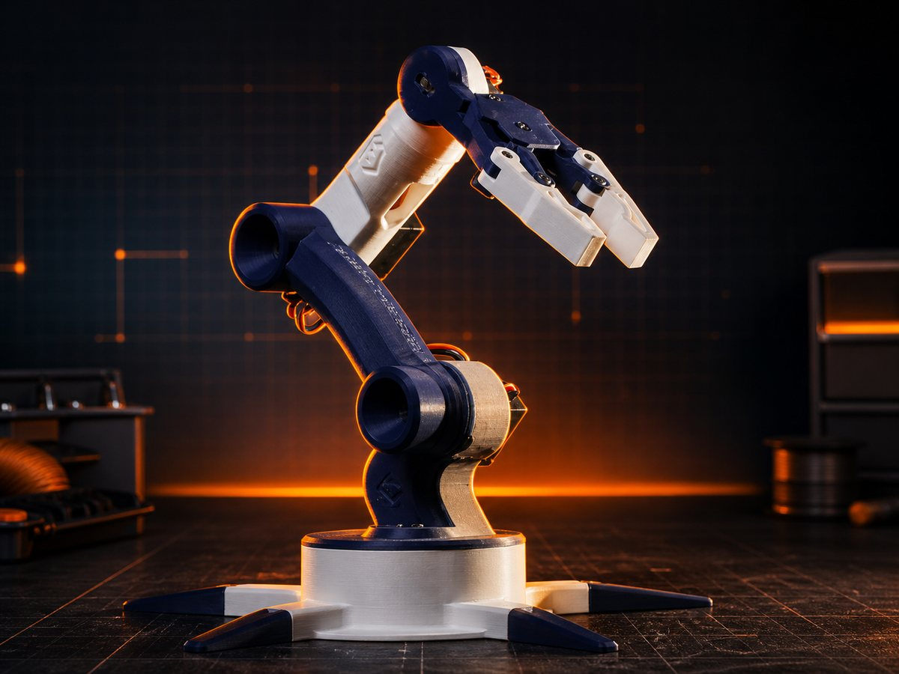
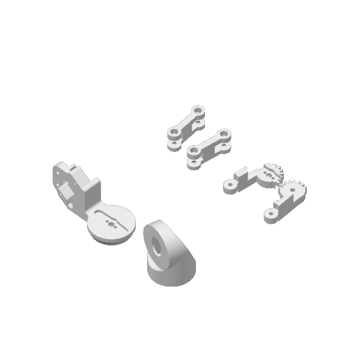
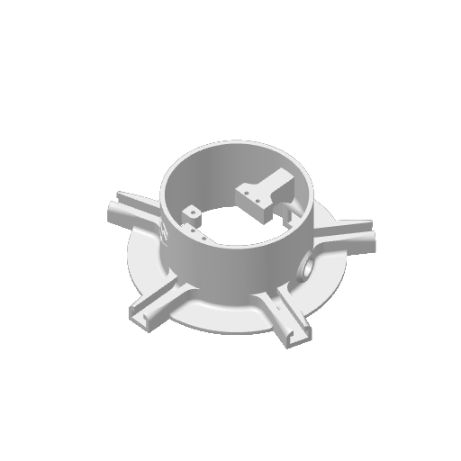
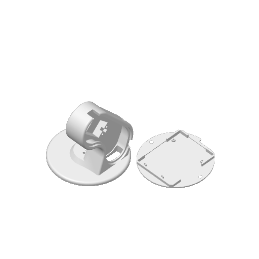

Tay máy Arduino
Dự án lấy cảm hứng từ mô hình robotic arm dùng Arduino: điều khiển nhiều servo để xoay các khớp, nâng hạ cánh tay và đóng mở cơ cấu gắp.

Mô hình 3D Robot Arm
Xoay, phóng to và quan sát trực tiếp cấu trúc tay máy robot trong trình duyệt. Mô hình giúp nhìn rõ form tổng thể, các khớp chuyển động và cơ cấu cơ điện tử trước khi đi vào chi tiết thiết kế.
Hình dung trước khi in
Thay vì nhúng trực tiếp file 3MF nặng vào website, phần này dùng ảnh preview được trích từ chính file thiết kế. Người xem vẫn thấy được form tổng thể, cụm khớp servo và các plate in mà trang vẫn nhẹ.



Ý tưởng dự án
Mục tiêu là dựng một tay máy robot đơn giản nhưng đủ rõ nguyên lý: Arduino nhận lệnh, điều khiển từng servo theo góc đặt trước, phối hợp các khớp để gắp và di chuyển vật nhỏ.
Các phần chính
- Bộ điều khiển: Arduino xử lý tín hiệu nút bấm, joystick hoặc lệnh serial để điều khiển chuyển động.
- Các khớp servo: servo cho đế xoay, vai, khuỷu và cổ tay để tạo chuyển động nhiều bậc tự do.
- Cơ cấu gắp: ngàm kẹp nhỏ dùng servo để đóng mở, phù hợp gắp vật nhẹ trong khu vực làm việc.
- Khung cơ khí: các chi tiết mica, nhựa in 3D hoặc kit lắp ráp để giữ cánh tay chắc và dễ tinh chỉnh.
Chỗ gắn tài nguyên
Khi có mã nguồn Arduino, sơ đồ nối dây hoặc link lưu file thiết kế 3D bên ngoài, chỉ cần thay href="#" ở hai nút đầu trang bằng link thật.